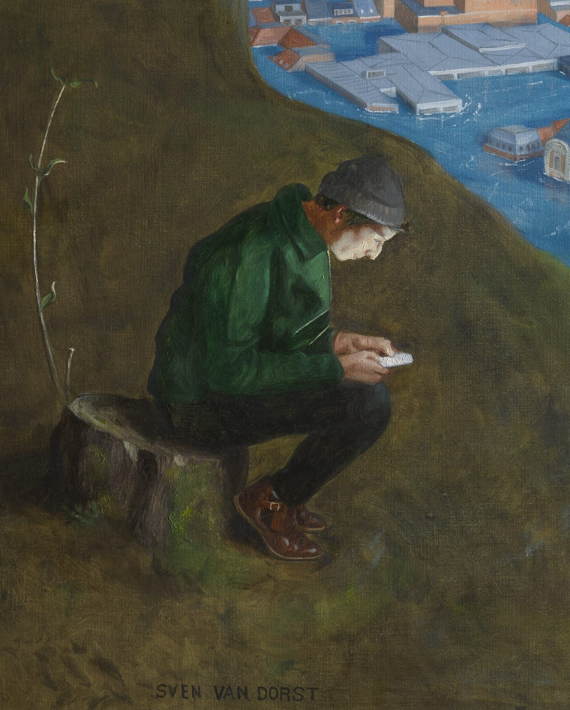

About
Sven Van Dorst
Artist Statement
Belgian artist, Sven Van Dorst (b. 1990) explores the relationship between the art of painting, visual traditions and the observation of the human condition. His practice is deeply rooted in the Renaissance and Old Master tradition, which is driven by a continuous process of study, observation and reconstruction. He builds on the accumulated knowledge of centuries’ traditional methods as a form of “borrowed expertise”, not to recreate the past, but to explore how its visual language can remain relevant today.
His training, spanning Florence, Italy, the Belgian Old Master tradition and Cambridge, has formed a practice in which historical and technical knowledge becomes a living tool for contemporary painting.
Van Dorst works as a modern Renaissance man from the studiolo: a place where observation, research and making converge. Books, artefacts, natural specimens and everyday things accumulate into a Wunderkammer. A cross-disciplinary archive treating history, philosophy, material culture and painting as classical subject and an art historical visual language.
Drawing and observing his surroundings remain fundamental to the way Van Dorst develops his work.
From intimate still life to expansive narrative composition, Van Dorst's work asks viewers not to look, but to enter: to inhabit the iconology through which we understand ourselves.
His practice moves from still life, where ordinary objects become witnesses to human experience, to portraiture, where psychological presence takes precedence over likeness, and the personality and allure of the model are just as important as their physical features.
Since 2020, this interest has moved into a deeper exploration of the human condition and the physical, psychological, and cultural contexts that shape us.
Today, his most ambitious development comes in the form of large-scale narrative compositions drawn from classical subjects and European art history, creating images that have the familiarity of our image tradition, but are unmistakably contemporary in their subject and message.
These recent figurative works often centre on our isolated and detached existence within a large community.
Architecture and the urban landscape play a central role in these works. As human constructions, buildings reflect our ambitions, values and ways of living. Grand façades can conceal disorder, while ambitious buildings remain unfinished. Van Dorst uses these observations as reflections on human nature, making architecture an active part of the narrative rather than simply its setting. Through these works, Van Dorst develops a visual language concerned with identity, memory and what it means to be human.
Study and Technical Mastery
Sven Van Dorst began studying oil painting at the age of 14 in the studio of the master painter Maarten Boffé.
Later, he pursued a Master's degree in Conservation and Restoration from the Royal Academy of Fine Arts Antwerp. He furthered his artistic training in Florence, Italy, studying portrait and figure painting at the Angel Academy of Art (2011) and at the Charles H. Cecil Studios (2013).
He subsequently worked at the Royal Museum of Fine Arts Antwerp and continued his training at the Hamilton Kerr Institute, University of Cambridge, where he researched the materials and techniques of Flemish still life painters. In 2016 he was invited to create the conservation studio of The Phoebus Foundation Antwerp.
For more than two decades, Van Dorst has combined painting with the study and conservation of Old Master paintings. His work has brought him into close contact with masterpieces by Rubens, Jordaens, Michaelina Wautier, Cranach and many others, examining them through direct observation and scientific analysis. This has given him an intimate understanding of how these paintings were constructed, from their support and preparatory layers to the handling of paint, colour and light.
This research is carried directly into his painting practices. Van Dorst experiments with historical materials and techniques, adapting them to his own work. Thin layers alternate with scraped or more heavily worked passages; transparency, texture and the reflection of light are carefully controlled. Old Master technique is not treated as a style to reproduce, but as accumulated knowledge to build upon.
For Van Dorst, technical research and artistic practice are therefore intertwined.
This research extends into publications on Old Master painting, forming another strand of the same studiolo practice.
Van Dorst is the author of several art historical books, including From Antwerp to Amsterdam – Painting from the Sixteenth and Seventeenth Centuries, Forever Flowers: Mastery and Meaning of Flower Paintings in the Low Countries (1600–1700), Flowers in a Vase with a Clump of Cyclamen and Precious Stones: A Gem of a Painting by Jan Brueghel I (1568–1625), and Vase of Flowers with Vanitas Symbols: Jan Davidsz. de Heem (1606–1684) on the Boundary Between Tradition and Innovation.
Publications